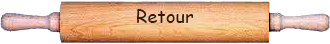

| Meringue Française | Meringue Suisse | Meringue Italienne | |
|---|---|---|---|
| Ingrédients pour 1 blanc d'oeuf |
|
|
|
| Recette |
|
|
|
| Utilisation | La meringue française est bien croustillante, très légère, mais aussi très friable. On peut évidemment la consommer telle quelle, mais on peut également l’émietter et l’ajouter à des préparations pâtissières, pour donner un peu de croquant. Elle peut bien être colorée et aromatisée : café, vanille, cacao, citron, coco… |
La meringue suisse a au moins une qualité, elle est très résistante à l’humidité. Elle est cependant moins aérienne que la meringue française. On la retrouvera donc plutôt dans les décors, par exemple les champignons en meringue ou les doigts de fée, mais aussi à l’intérieur de glaces, comme les mystères. |
Elle sert notamment à chemiser d’autres préparations, comme des tartes ou des entremets. Elle est très utilisée aussi pour les coques des macarons, ainsi que pour des confiseries, telles que guimauves ou nougats. On peut enfin l’utiliser pour alléger d’autres préparations, comme des crèmes au beurre, des crèmes pâtissières ou des mousses. |
| Conservation | La meringue française se conserve plusieurs semaines, dans une boîte hermétique, dans un endroit sec. Faites attention, elle craint l’humidité. Elle a tendance à ramollir et à devenir collante. |
Comme la meringue française, elle se conserve bien et longtemps, vous pouvez donc la garder au moins 3 semaines. | Elle ne se conserve pas telle quelle. Il faut l’utiliser rapidement après l’avoir préparée. |
|  | |||